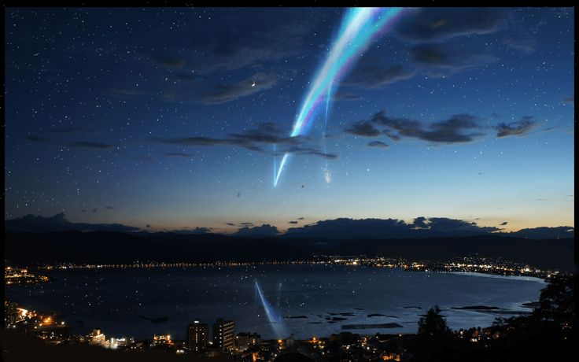
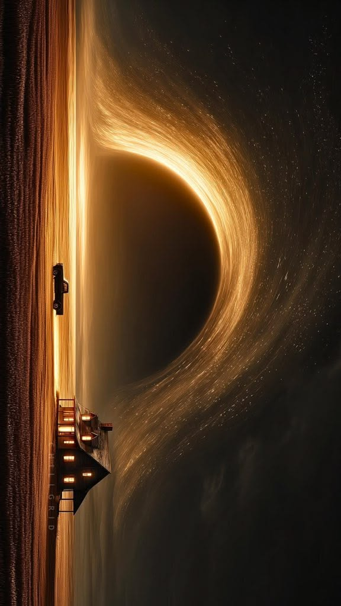
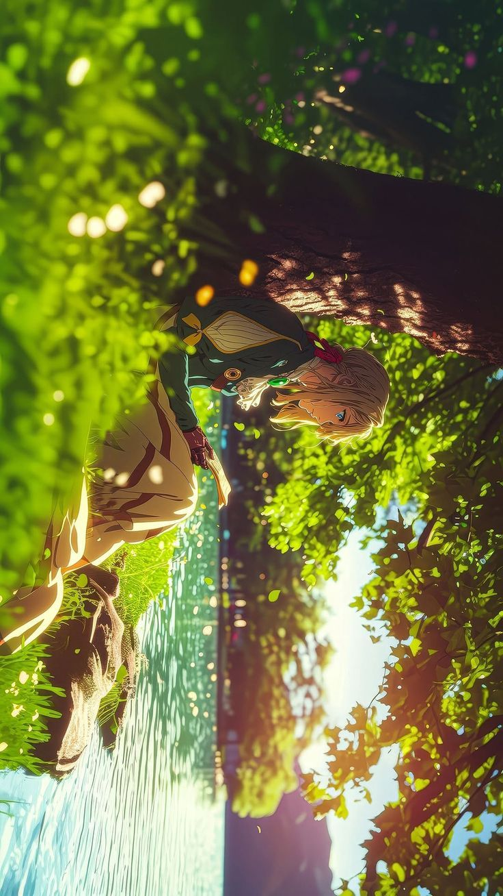

Film & Anime
Ulasan, esai, dan refleksi tentang sinema dan animasi — dua medium yang paling jujur dalam bercerita.
"Setiap film adalah jendela. Setiap anime adalah dunia."
Semua
Film
Anime
Esai
Daftar

anime 9.2 / 10
10 Des 2024
review
12 min read
Makoto Shinkai berhasil membuat sesuatu yang hampir mustahil: sebuah film yang terasa seperti mimpi indah yang kamu tahu tidak akan pernah benar-benar kamu alami, tapi kamu tetap ingin merasakannya lagi dan lagi.
baca ulasan lengkap →
anime 9.5 / 10
22 Nov 2024 review 10 min read
Miyazaki membangun dunia yang tidak perlu kamu pahami sepenuhnya untuk dicintai. Cukup rasakan, dan biarkan membawamu hanyut.
baca ulasan lengkap →

film 9.0 / 10
05 Nov 2024 review 11 min read
Nolan membuktikan bahwa sci-fi terbaik bukan tentang teknologi — tapi tentang apa yang membuat kita tetap manusia ketika segalanya runtuh.
baca ulasan lengkap →
18 Okt 2024 esai 8 min read
Mushishi bukan anime yang ditonton untuk plot. Ia adalah meditasi — sebuah undangan untuk melambat di dunia yang tidak bisa berhenti bergerak.
baca esai →
30 Sep 2024 daftar 6 min read
Bukan sekadar rekomendasi. Ini adalah daftar anime yang meninggalkan bekas — yang saya bawa pulang jauh setelah episode terakhir selesai.
baca daftar →

anime 9.4 / 10
10 Sep 2024 review 9 min read
Seorang mantan serdadu yang mencoba memahami makna "aku mencintaimu." Kyoto Animation mengemas trauma dan pertumbuhan dalam visual yang melampaui kata-kata.
baca ulasan lengkap →